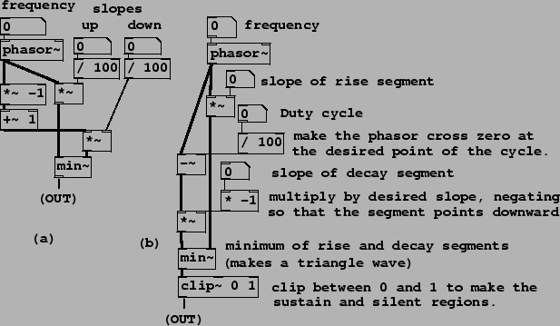

|  |
Example J05.triangle.pd (Figure 10.14, part a) shows a simple way to make a triangle wave, in which only the slope of the rising and falling segment are specified. A phasor supplies the rising shape (its amplitude being the slope), and the same phasor, subtracted from one, gives the decaying shape. The minimum of the two linear functions follows the rising phasor up to the intersection of the two, and then follows the falling phasor back down to zero at the end of the cycle.
A triangle wave can be clipped above and below to make a trapezoidal wave, which can be used either as an audio-frequency pulse or, at a lower fundamental frequency, as a repeating ASR (attack/sustain/release) envelope. Patch J06.enveloping.pd (Figure 10.14 part b) demonstrates this. The same rising shape is used as in the previous example, and the falling shape differs only in that its phase is set so that it falls to zero at a controllable point (not necessarily at the end of the cycle as before). The clip~ object prevents it from rising above 1 (so that, if the intersection of the two segments is higher than one, we get a horizontal ``sustain" segment), and also from falling below zero, so that once the falling shape reaches zero, the output is zero for the rest of the cycle.
Example J07.oversampling.pd shows how to use up-sampling to reduce foldover when using a phasor~ object as an audio sawtooth wave. A subpatch, running at 16 times the base sample rate, contains the phasor~ object and a three-pole, three-zero Butterworth filter to reduce the amplitudes of partials above the Nyquist frequency of the parent patch (running at the original sample rate) so that the output won't fold over when it is down-sampled at the outlet~ object. Example J08.classicsynth.pd demonstrates using up-sampled phasors as signal generators to make an imitation of a classic synthesizer doing subtractive synthesis.
Example J09.bandlimited.pd shows how to use transition splicing as an alternative way to generate a sawtooth wave with controllable foldover. This has the advantage of being more direct (and usually less compute-intensive) than the up-sampling method. On the other hand, this technique depends on using the reciprocal of the fundamental frequency as an audio signal in its own right (to control the amplitude of the sweeping signal that reads the transition table) and, in the same way as for the PAF technique of Chapter 6, care must be taken to avoid clicks if the fundamental frequency changes discontinuously.